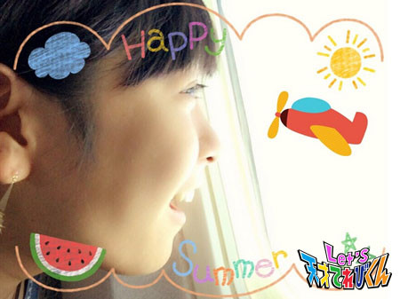
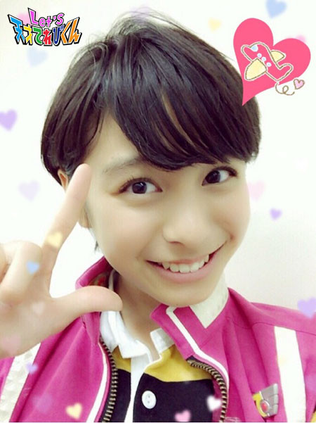
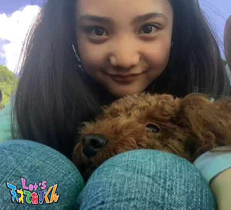

<<2015年8月 | トップページ | 2015年10月>>
2015年9月
夢の記憶［原田明莉］
☆ Hello ☆
原だーはらです！
修学旅行さいこーっでした！
あとあと、横浜 赤レンガのイベント、たくさんのお客さんが集まってくれてました！
すごい楽しいショーになりましたよ！
どうもありがとうございました！
では本題にはいります ^ ^
今回のテーマは「 夢の記憶 」です！！！
夢ってなんか、見てるだけだと、その中にのめり込んでるんですが、
実際、現実で夢のことを話すとおかしいって気づきません？
夢なんてみんな、アホっぽいことですよね！
私のお気に入りの夢を聞いてください！
私、空手で日本一になる夢を見ました！！
↑
どんだけ都合の良い人なんでしょー笑
表彰台のてっぺんにいて、銀と金のキラキラしたものが降ってきました！
会場のみなさんは私のことを、というか私のことだけをたたえていました！！！
どんだけ都合良ければ気がすむんでしょー笑
それともう１つ、これは絶対に忘れない夢・・・
私、なぜか余命は今日までという宣告をうけたんです！
お母さんは泣いてくれなかったんですが、私は号泣してました！
そのときは何も考えられませんでした！
でも落ち着いて考えたとき、
「 明日の全国大会はどーなるの！？ 」
と思い、
ふぁあ！！！！！！！！！！！
と起きました 笑
その夢を見た日はリアルに全国大会で、
大阪に行く前日から当日にかけて見ました！
死ぬ前まで空手のことは忘れなかった私はエライ！！！（ パチパチ ）
なーんて、夢とは不思議なものですよねー
結構夢を多く見る人なので、できれば夢は見たくないんです！
その方がぐっすり眠れると思うから！
何より今からは
全国をとるという夢を正夢に近づけていくためがんばりたいです！
私の夢について語らせてもらいました。笑
みなさんはどんな夢を見ますかー？
★ Let's Dream ★
投稿者:原田明莉 | 投稿時間:18時45分 | カテゴリ：てれび戦士 | 固定リンク
夢の記憶［小西憧弥］
こんにちは！憧弥です。
夏休みあんなに暑かったのに、今はすごく涼しい。
寝にくかったのに、今はスヤスヤ眠れて、幸せです。
夏休み中になんと！
僕の部屋ができました！イエーイ！
もうすぐ中学生になるから、勉強するための部屋！
うっれしー！
それまでリビングで勉強してたんだけど、
今は自分の部屋でやってるし、寝るのも１人で寝てます (^-^)/
ちょっと成長・・・いや！結構成長したー！
 では、今回のお題「 夢の記憶 」です。
では、今回のお題「 夢の記憶 」です。
小さい頃、何日か同じような夢を見ました。
いろんな生きものに追いかけられるの。
足が８本あって目が１つで角があって、
あとは――カマキリみたいだった！
それが怖くて怖くて逃げようとしても足が動かないの！！
思い出すだけで震えちゃう！
飛び起きて、怖くてお母さんに抱きついて寝たのを思い出した！
そのまま寝るとまた夢の続きだから、
怖くてしばらくお母さんとしゃべったりして、一緒に起きてもらってた・・・・・・。
最近は夢見なくなったなー。
やっぱり楽しい夢の方がいいよね！
楽しい夢って起きても覚えてないんだよなーなんでだろー。
まーいっか！寝られるだけで幸せだから！
それじゃぁバイバーイ！
投稿者:小西憧弥 | 投稿時間:18時45分 | カテゴリ：てれび戦士 | 固定リンク
夢の記憶［齋藤茉日］
こんにちは♪
茉日です^ ^
今回のテーマは「夢の記憶」です ^ ^
皆さんはどんな夢を見ますか？？
それは楽しい夢でしたか？
悲しかったですか？
うれしかったですか？。。。
私は、なんと！！！！！
なんと！！！！！
・・・
全く夢を見ません！！
(=´∀｀)人(´∀｀=)
いちばん最近の夢で覚えてるのは。。。
「 家にある和室の部屋に、キャラクターのマイクやドラム、ギターなどの
おもちゃが置いてあった場所が実際にあったんですけど、
おばあちゃんとお母さんと私でそのおもちゃの中に入っていったら、
いきなり近所のとっても広い公園について、
もうとてつもなく巨大で恐ろしい悪魔の人 >_< や、恐竜 >_< が襲ってくる 」
という夢を３、４歳の頃に見たのが最後です笑笑
なんでこんなに夢を見られないんだ？と思ったので調べてみました♪
夢が見られない理由は。。。
実は夢は毎日誰でも見ているんですって！
夢は浅い眠りのときに見てるんだそうで、
覚えていないだけなんだとか♪
なんで覚えていないのか、と言いますと～
〈 覚えてるときは 〉
浅い眠りが終わった深い眠りに行くまでの
ちょうどいいところで起きていると夢が見れる、という説があって
〈 覚えていないときは 〉
深い眠りに入ってしまってから起きると
覚えていないことがあるんですって！
調べてみるとすごく面白くて
自分が見たい夢を見ることもできなくはないんですって！！！
例えば、
見たい夢を想像したり、絵に描いたり写真を眺めたあとに
枕元に置いておいてゆっくり寝る
というのが方法らしいです！
色んなものがあったのですが、この方法が簡単そうだったので紹介してみました♪
そこで！私も挑戦しました！
沖縄どちゃもん ぱんがやしゃーんを仲間にするために行った沖縄に、
もう一度家族で行ってみよう！
と思って沖縄の写真を見て想像していたら自然に寝ていました！
朝起きてみると。。。
なんと！！
信じられないと思いますが！
夢を覚えていなかった！
笑
ショッキングです～ >_<
毎日挑戦していたらいつか夢を見られるかな？？
自分が見たい夢を見たいです！
確かに、私は眠りが深そうです
こちらを見てください♪
寝てる >_<
あ、実はわんちゃんも夢を見るらしいですよ♪
気持ち良さそう♪
それでは今回はこの辺で♪
ほんたらまたねー
投稿者:齋藤茉日 | 投稿時間:18時45分 | カテゴリ：てれび戦士 | 固定リンク
夢の記憶［笹原尚季］
こんにちは尚季です (^^)
この前、お母さんの地元の群馬の、敷島公園とばら園に行ってきました。
敷島公園はすごーく広くて、アスレチックや木の家があったり・・・
カモさんがいてエサをあげていたら、鯉（こい）さんに横取りされてしまいました。
鯉さんもお腹が空いてたんだ！
両方かわいかったから良かった！
あとはばら園、
ばらの季節じゃなくて残念だったけど、
きれいな花が入り口にあったので写真を撮ってきました。
近くのお寿司やさんでお寿司もいっぱい食べて、
満足でした*･゜ﾟ･*:.｡..｡.:*･'(*ﾟ▽ﾟ*)'･*:.｡. .｡.:*･゜ﾟ･*
今回のお題は、「 夢の記憶 」です。
僕は、いつもぐっすり寝ていて、
夢の記憶はないけれど、ちょっと不思議なことがあります。
寝る前にドラマの台本を覚えるのに、
セリフが多すぎて覚えられないときがあり、
順番がバラバラのまま整理できずに寝て起きたら、
きっちり覚えていた！ということが何度もありました。
多分僕の脳が、朝起きたら困るだろうな～って考えて、
夢の中で、覚えきれていないところを一生懸命整理してくれているんだと思います。
僕は寝ていて記憶がないからわからないけれど、
助けてくれてありがとう！って感謝してます (o^^o)
投稿者:笹原尚季 | 投稿時間:18時45分 | カテゴリ：てれび戦士 | 固定リンク
夢の記憶［桐畑カレン］
こんにちは。
カレンです (*^^*)
この前とってもかわいい和三盆（ わさんぼん ）のおかしを見つけました♪
うさぎさんがお月見をしているんです (^w^)
かわいくて食べるのがもったいないな～と思ったけど、
やっぱり食べちゃいました (’-’*)
あまくておいしかったです♪
今回は「 夢の記憶 」ですね♪
なんだかロマンチックな言葉ですね (≧▽≦)
でも・・・
「 んー、なんか見てるけど・・・なんだっけσ(^_^;)? 」
私、忘れちゃうんです (Ｔ▽Ｔ;)。
どんな夢をみてたか・・・。
だから気になった夢は忘れないうちに、
すぐに夢占いの本で調べるようにしています。
そうすると意外なことが分かったりするんですよ。
で、しばらくして忘れます (-""-;)
夢について、うーーんと思いだそうとしたんですが、
あんまりはっきりした記憶がなくて・・・。
なので、今見たい夢をお話します (^-^)/
【 塾の算数のテストで100点とれたよ！ 】
今、“ 比 ”のお勉強をしているんですが、
文章問題で分配算や年れい算や倍数算やいろいろ、
とにかく〇〇算がいっぱい出てきます。
分かった！と思っても、違う問題にチャレンジすると、
「 え・・・全然分からない(. .) 」
となって、とっても困っています (-_-;)
まだテストを受けていないけど、受けたらどうなるんだろう・・・ (/o＼)
きっと、今まで見たことがない点数になるはず。
それはそれで一体何点なのかちょっと楽しみ (^w^)
あー、100点とりたいな。
というか、早く理解できるようになりたいな。
夢が現実になるといいなヽ(^。^)ノ
投稿者:桐畑カレン | 投稿時間:18時54分 | カテゴリ：てれび戦士 | 固定リンク
夢の記憶［林武尊］
こんにちは、林武尊です。
みなさん、名古屋と横浜のイベントに来てくれてありがとうございます＼(^o^)／
茶の間戦士のみんながいっぱい来てくれたので、
イベントは大成功でした！！！！
横浜のイベントのあと、てれび戦士のみんなとプリントシールを撮ったよ～
みんな肌がツルツルで目がクリクリー
面白い (*^^*)
それからショウロンポーを食べに行きました。
おいしかったー
おいしすぎて眼鏡が下がっちゃった (´･_･`)
上の写真と顔のギャップがありすぎて、ウケる～（≧∇≦）
では本題へ。
今回は「 夢の記憶 」です。
僕は何度もITAISENの夢を見ます。
その中でいちばん印象に残ってるのは、
課長と僕以外の全員が超次元帝国清掃課にあやつられるという夢です。
なんと最初に虎南分析官が清掃課の仲間になって、
みんなに新しいベストを着せて洗脳してしまうのですが、
なぜか僕だけベストをもらえず・・・
で、大野課長をあやつろうとするのですが
おバカ過ぎて（ ごめんなさい ）逆にあやつられなくて、
２人で清掃課のあやつりを解いたという夢です。
けっこう面白い夢でした！
でも夢でよかったー (*￣∇￣*)
これが現実だったら結構怖いです(>_<)
ほんとはもっと良い夢をみて気持ちよく起きたいです！
ショウロンポーを食べてる夢でもみたいなー
ではまたねー
投稿者:林武尊 | 投稿時間:18時45分 | カテゴリ：てれび戦士 | 固定リンク
夢の記憶［赤崎月香］
こんにちは ヽ(^▽^@)ノ
赤崎月香です。
夏休みの家庭科の宿題で、
１日の献立（こんだて）を考えて、作ってみよう♪
というのがありました。
はりきってメニューを考えたけど、
作るのはちょっと・・・ (￣□||||
食材を無駄にしてしまったり、
食べられるんだけど、見栄えがボロボロだったり、
かなり失敗しました。(=;ェ;=)
お母さんにお手伝いしてもらって、
なんとか完成！！！ ヾ(〃^∇^)ノ♪
メニューを考えるのも、
お買い物も、お料理も、後片付けも、
めちゃめちゃ大変！！！
みんなも感謝して
いただきましょう (*￣￢￣)o―∈~
☆。・:*:・°★,。・:*:・°☆
『 夢の記憶 』
私は、夢をすごく覚えています！！！
色、匂い、感触、食べ物の味、などなど。
まぁ、食べ物に関しては、
ほとんど食べる前に目が覚めちゃって、
悔しくてモヤモヤします(-_-;
この前見た夢は、
【 焼肉世界大会 】に出場して、
極上カルビを食べる前に目が覚めました・・・
いい匂いがしてて、
さぁ！！！ 食べまーーーす！！！m(￣○￣)m
ってときに、タイムアップの鐘が・・・
目覚まし時計のイジワル (＿TдT)
☆。・:*:・°★,。・:*:・°☆
それから、風邪や体の調子が悪いときに
必ず同じ夢を見ます！！！
家の中も外もグルグル回っていて、
何かを目指して走る夢です。≡≡≡ヘ (*--)ノ
逃げてるんじゃなくて、
とにかく何かに向かってダッシュしてる感じ！！
グルグルがだんだん速くなって、
変な匂いがして・・・
とにかくすごく怖い夢なんです！！！。。゛(ノ><)ゝ
☆。・:*:・°★,。・:*:・°☆
授業中の風景や
家族でご飯を食べていいるときに、
「 あっ！！！これ夢で見たことあるーーー！！！ 」
ってことがありませんか？
私はあります！！！
最新のうれしかった夢は、
飛行機と並んで空を飛んだ夢です♪
最高！！！
あっ！！！これ夢で見たことあるーーー！！！
ってならないかなぁ～ ('-'*)
なるわけないかぁ～ (^^;)
またね～ ヾ(*'-'*)
投稿者:赤崎月香 | 投稿時間:18時45分 | カテゴリ：てれび戦士 | 固定リンク
夢の記憶［瀧澤翼］
こんにちは～！
最近、涼しくなってきて秋の気配を感じる瀧澤翼です！
夏休みの思い出その２
長崎旅行でテーマパークにも行ってきたんです！
たっくさんの傘が頭上に ( ﾟДﾟ)
絶好の天気でプールに入ったり、
アトラクションにも参加できたし、
夜はホテルからイルミネーションを見られて最高でした！！！！
また来年も行きたいな～（＾ν＾）
長崎、最高！！！！！！！！！！！！
さぁ、今回のテーマは「 夢の記憶 」ですね。
つい最近のことですが、大好きな海鮮丼やお刺身を食べている夢をみたんです。
しかも食べ終わったあと、階段でコケるというリアルな夢でした (^_^;
ちょっと怖かったんですが、あまり気にしていませんでした。
たまたま家族で食事に行ったとき、
初めて入ったお店で、お刺身を注文したんです。
あれ～？この風景、どこかで見た気がするなぁ？？？
おいしそうなお刺身に、あの階段？？
思い出しました。あの夢です！！！！
もうビックリ！！
夢では食後にコケているので、気をつけて階段を下りました。
こんな経験ってありますか？
夢って不思議だなぁ(^O^)／
それじゃあ次回もお楽しみに！！！！
Let's 夢！！
投稿者:瀧澤翼 | 投稿時間:18時45分 | カテゴリ：てれび戦士 | 固定リンク
夢の記憶［飯島緋梨］
こんにちは ^ ^
飯島緋梨です。
すっかり秋になりました (^_^)
今年は６年生なので展覧会があります。
図工で木製の時計を作るので今から楽しみです (^_^)
緋梨はやっぱりネコ型時計かな？？
さて今回のお題は
「 夢の記憶 」
それは緋梨が
小さい頃の話・・・
とっても怖かった夢の話・・・
何度も同じ夢をみるのです！
怖いのが苦手な人は見ないでね・・・
いつもは家族やいとことボーリングに行くのに
１人でボウリング場にいました。
そして緋梨が投げるレーンには
緑色のマットがなぜか敷いてあるのです。
緋梨は何の迷いもなしに
ボールをピンに向かって投げました！！
ゴロゴロゴロ
すると！
なんと緑色のマットが大きくてするどいきばを見せて、
グルグル巻きながら緋梨におそいかかってきたのです！！！！
それはすごい勢いで
「 ガオー 」と言いながら！
逃げようとしたのに全然動けません
もうダメだ食べられる (>_<)
と思ったしゅんかん
緋梨は目を覚ましました ~_~;
小さい頃の緋梨には怖くて怖くて
次の日の夜も思い出しちゃって
全然ねられませんでした。
他の夢は起きたときに忘れちゃうのに、
このときの夢は今でもずぅーと
覚えています・・・
でもなんでこんな夢を見たのか、
今でもわかりません。
夢占いとかあるかな？
！な・ぞ！
みなさんには
どんな夢の記憶がありますか！！
今日はどんな夢かな～ ^ ^
楽しい夢だといいな！！！！
不思議な夢の話 (=￣ ρ￣=) ..zzZZ
投稿者:飯島緋梨 | 投稿時間:18時45分 | カテゴリ：てれび戦士 | 固定リンク
夢の記憶［小澤竜心］
こんにちは！竜心です。
夏の終わりに、
秋田のおじいちゃん、おばあちゃん家に行きました。
久しぶりの、おじいちゃんの畑～ ((o(^∇^)o))
野菜がいっぱいなってて、うれしかったです♪
その中でも１番おいしかったのは『 枝豆 』です。
口の中でとろけて、甘じょっぱかったです (*≧∀≦*)
さて、今回は『 夢の記憶 』のお話です。
ぼくが覚えている夢は、
５才くらいのときにみた、『 どろぼうの夢 』です！！
夢の中のぼくは『 大泥棒 』で、
ある日、警察官や自衛隊、狙撃（そげき）部隊などが、
ぼくのまわりに集まって、攻撃してきました。
ぼくは逃げたけど、武器を持っていません (>_<")
そこでぼくは、夜ご飯にしようとしてた、
ブルーベリーといちごとすももを、投げつけました！
最初は戦ってたけど、敵のひとりが、
ブルーベリーを食べて「 おいし～い♪ 」と言って、
みんなが「 もっと、投げてこーい！ 」と言ってきて・・・、
もっと投げたら、敵の隊長が、
「 オレ達の仲間になってくれ！ 」と言ったので、
敵の仲間に入りました。めでたし☆
・・・・・・・・・という夢でした。
最近のぼくは夢をみても、
なんにも覚えてないんです゜゜(´O｀)°゜
お父さんやお母さんが言うには、
「 すみません、すみません！ほんとに、すみません！ 」
とか、
「 だから、言ったでしょー！ 」
とか、
はっきり寝言を言ってるそうですが、
朝起きると、なんにも覚えてないんです～(^_^;)))
どんな夢をみてるのかな？？
自分でも、知りたいです。
投稿者:小澤竜心 | 投稿時間:18時54分 | カテゴリ：てれび戦士 | 固定リンク
〇〇の秋［齋藤茉日］
こんにちは♪
茉日です (^^)
今回のテーマは「 ○○の秋 」です♪
私が思うのは
夏って、友達と遊んだあとの別れ際にバイバイ♪って声をかけるときに
「 バイバーーーイ！！ 」
って元気に声をかける気がするんです。
日が落ちるまでの時間も長いし、別れ際でもまだ明るい時間も多いと思います ^ ^
でも秋ごろになると、だんだん日の落ちる時間も早まってきて
みんなと別れるときには薄暗い夕日が空に見えたりしませんか？
だから声をかけるときも
「 またね～。」とか「 バイバイ♪ 」「 じゃあね。」
と、つぶやく感じで言うことが多いと思います♪
そんな切ない空が見える秋が好きです♪
なので私は「 切なさの秋 」だと思います ^ ^
空の色もオレンジ色をしていたり、ピンク色っぽい色をしていたりと
空にもさまざまな表情があるんですよね～(o^^o)
このグラデーションの空。
素敵です >_<
はぁ～。
ついついため息出ちゃうな～。。。
秋は落ち着いてすごせるし
ゆっくりお茶でも飲みながら、
１日が過ぎていく日を送ってみたり。。。。。。。
なんて空想を頭に浮かべてみたりね♪
笑
ゆっくり自分を考えられる秋は期間が短いけど
存分に満喫しちゃおうと思います♪
ほんたらまたねー
投稿者:齋藤茉日 | 投稿時間:18時45分 | カテゴリ：てれび戦士 | 固定リンク
〇〇の秋［笹原尚季］
こんにちは！
尚季です (o^^o)
あの、あっっつ～～い毎日が嘘みたいに、
朝も夜も涼しくなってきて、外遊びもしやすくて幸せです☆
今回のお題は、「 ◯◯の秋 」です。
僕の今年の秋は、
お料理の秋です♪
今年の秋には、お料理をたくさんしたいです！
たまにお母さんに教えてもらいながら、料理を手伝っています。
毎回すごく楽しいので、
この秋には、もっとたくさんお料理がしたいです^_^
大変だけど、自分で作ったご飯はすっっごくおいしいから♪
夏休みには、さっぱり焼き鳥を作りました。
辛みそをつけて食べると特別おいしいです。
家族にも大好評でした。
たこ焼きも難しかったけど作るのが楽しかったです。
また家族みんなに喜んでもらえるとうれしいです☆
投稿者:笹原尚季 | 投稿時間:18時45分 | カテゴリ：てれび戦士 | 固定リンク
〇〇の秋［桐畑カレン］
こんにちは。
カレンです (*^^*)
秋といえば、私の中では食欲の秋！
うーん、食欲は１年中かも(^-^;
私のおたんじょう日があったり～
お月さまがきれいに見えたり～
やっぱり秋は好きな季節です♪
今年の秋は、ずばり！
☆ 自転車に乗れる秋 ☆
にしたいです。
「 乗れたらいいな～ 」
くらいに思っていた自転車。でも最近・・・
自転車に乗れない (--;)
なんか不便・・・(^^;)
と思うようになってきて、今は乗りたい！という強い気持ちが出てきました。
運動が苦手な私だけど、強化訓練で、
「 おおなわとび 」や「 とび箱 」の練習をさせてもらって、ちょっと自信がついたんです。
「 あれっ、私、なんかできるかも～ 」って (^^)
人より時間はかかるけど (^-^;
ようち園のころに買ってもらった自転車。
乗れなくて、練習がいやであきらめてしまって、
おばあちゃんのおうちにねむったままです。
今度こそはあきらめずに練習！練習！練習！
そして、乗れるようになったら、
秋の気持ちいい日にサイクリングに出かけたいな♪
女の子だから
☆ おしゃれの秋 ☆
も気になります。
この前ね、だーはらちゃんに「 腹筋運動の仕方 」を教えてもらったんですよ。
それで本当の腹筋らしい腹筋が
少しずつできるようになってきている気がしているんですよ。たぶん (^^;))
いろんなおしゃれができるように
食欲でぽっこりしたおなかをひきしめたいなと思います (*^o^)
投稿者:桐畑カレン | 投稿時間:18時45分 | カテゴリ：てれび戦士 | 固定リンク
〇〇の秋［小西憧弥］
こんにちは！憧弥です。
夏休みに、おばあちゃんの家に遊びに行きました。
昆虫博物館に行ったり、ひまわりがたくさん咲いてる公園に行ったり、
ザリガニ釣りをしたり、花火をしたりしました。
おばあちゃん家にいる間に、おじいちゃんがタコ釣りに行って、
タコをいっぱい釣ってきました。
生きたタコを持ったのは初めてだったんだけど、
むにょむにょして、ヌメヌメして、すごく重かったです。

それでは本題「 ○○の秋 」です！
それで考えたのが、「 キャンプの秋 」
秋だと暑すぎないし、寒すぎないし、
花粉も少ないし、秋のキャンプは最高！
釣りもできるところにテントを張るから、ぼくの好きなことばっかり！
みんなで協力してテントを張るのも楽しいし、
バーベキューのためのまき拾いや火おこしも大好き！
あと、夜みんなと寝袋で寝るのも楽しくて好きなんだ～（≧∇≦）
てれび戦士のみんなと一緒にキャンプに行けたら楽しいだろうなぁ♪
投稿者:小西憧弥 | 投稿時間:18時45分 | カテゴリ：てれび戦士 | 固定リンク
〇〇の秋［杉本瑛］
みなさん、アロハ～♪（ハワイ語でこんにちは！）
いよいよ秋ですね！
秋といえば、瑛の大好きなぶどうがおいしくなる季節っ！！
巨峰や皮ごと食べられるナガノパープルが特に好きです（≧∇≦）
たーくさん食べて、体の中に１年分のぶどう貯金をします（＾∇＾）
さて、今回のお題は、「 ○○の秋 」です。
私の「 ○○の秋 」は、音楽の秋です☆
マリンバは『 天国と地獄 』を練習しています。
軽やかなテンポの楽しい曲だから、
弾いているとあっという間に弾き終わっちゃいます（＾◇＾
和太鼓は、日舞のお稽古（けいこ）のときに
初めて教えてもらって面白かったから
自分で和太鼓体験に行ってみました。
和太鼓の力強い音やバリエーションに魅了されて、
９月から本格的に習いはじめることにしました ☆彡
ピアノやお琴は、暇なときにいろんな曲を弾いて遊んでます。
楽器を弾いていると、
自分の周りの時間の流れがゆっくりになる気がします。
だから音楽の秋は、いろんな楽器を楽しまないとね (o^^o)
投稿者:杉本瑛 | 投稿時間:18時54分 | カテゴリ：てれび戦士 | 固定リンク
〇〇の秋［辻村晃佑］
どうも～ 辻村晃佑ですーー
２学期が始まったぞー
夏休み（最後らへんは宿題に追われてたなんていえない (・・;) ）は長かったから
授業が長く感じるなー
夏休みはおばあちゃん家に行って海で遊びましたー！
秋は体育祭や合唱コンクール等の行事があるからがんばりたい (*￣∇￣)ノ
でも最近は暑さがなくなって、ちょっと肌寒くなってきたなー
体育祭のとき寒くならないといいなー！
さて本題です。
秋といえば、「 食欲の秋 」とか「 芸術の秋 」とかいろいろな秋があるけど、
僕が一番体験してる秋は・・・・・
デレレレレレレレレ・・・・・デーン・・・・・
「 睡眠の秋 」です ( ・ε・)
なぜか僕は秋になるとすごーーーく睡魔（すいま）に襲われるのです！
それは涼しくなって
体がほっとするからじゃないかなと思います (o^-')b ！
まぁ詳しくはわからないけどね (゜д゜)
寝る子は育つというので、今年の秋はたっぷり寝るぞー！
Let's！
投稿者:辻村晃佑 | 投稿時間:18時45分 | カテゴリ：てれび戦士 | 固定リンク
〇〇の秋［原田明莉］
☆ Hello ☆
明莉です！！
夏休みの宿題、本当に本当にギリッギリでした！！
終わってひと安心です ^ ^
では本題に入ります！
今回のテーマは
「 ○○の秋 」
です！
私の「 ○○の秋 」は２つあります！
まずひとつ目は
「 勝ち秋 」
です！
秋は季節の中で一番空手の試合が多い時期です！
小学生最後っていう節目だから、
次はないとおもってがんばりたいです！
２つ目は
「 友情の秋 」
です！
友情っていうのは、秋に修学旅行があるんです！
それもそれも卒業に近い修学旅行です！
卒業までにみんなでひとつになって
友情を深められる秋になればと思ったからです！
同じ先生・同じクラスのメンバーで修学旅行に行くっていうのは
今後絶対にないことだと思います！
そんな旅行を大事にしたいって思ったからです！^ ^
秋に友情深めて後悔のない卒業ができればうれしいです！
今年の秋は毎年すごす秋よりちょっと特別なんだと思います！
てれび戦士や茶の間戦士ともチームワークを強めて、
みんなで地球を守るためがんばろう！！
では、せぇーの！
★ Let's ★
投稿者:原田明莉 | 投稿時間:18時45分 | カテゴリ：てれび戦士 | 固定リンク
〇〇の秋［瀧澤翼］
こんにちは！！！！！！！！！！
タキツバ？こと瀧澤翼です！！！！
７月にひいおばあちゃんの誕生日があったのですが、
僕もびっくり、100歳のお誕生日だったのです *\(^o^)/*

まだ僕の知らない昔のお話を聞かせて欲しいです。
そして、101歳のお誕生日もお祝いしてあげたいです！！
今回のテーマは「 ◯◯の秋 」ですね。
秋といえばやっぱり食欲の秋！！
夏の家族旅行で行った長崎県には、
伝統料理の卓袱料理（ しっぽくりょうり ）というものがあり
宿泊した旅館で食べました。
卓袱料理とは、回転テーブルの上にたくさんの料理を乗せて
大勢で楽しく食べる料理のことです。
今回は少人数用に小さめの回転する器に料理が入っていました。
いろんな料理が出されて１個１個違う味が楽しめて本当においしかったなぁ～ (￣▽￣)
秋はおいしい食べ物がたくさんあるから、たくさん食べたら運動しよ～！！
Let's 食欲！！
投稿者:瀧澤翼 | 投稿時間:18時45分 | カテゴリ：てれび戦士 | 固定リンク
〇〇の秋［赤崎月香］
こんにちは ヽ(^▽^@)ノ
赤崎月香です。
この前、空港で政府専用機を見ました♪
結構近くで見れたんですよ！！！
私 「 きゃーーー！！！ 政府専用機だーーー！！！
かっこいい！！！ いやっ！！！ かわいい！！！」
テンションが上がりすぎて大興奮 (￣ε=‥=з￣)
すると、
母 「 飛行機がかわいいって・・・ 思ったことないわ 」
と、あきれられました σ(^_^;)
飛行機は、かっこかわいいんです！！

☆。・:*:・°★,。・:*:・°☆
『 ○○の秋 』
秋は、おいしいものがたくさんあるし♪
体育祭もあるし♪
なんといっても、お誕生日がある！！
わくわくするーーー ((o(^-^)o))
食欲の秋 ＆ 紅葉の秋
おいしいご飯をお腹いっぱい食べて～
露天風呂から
色あざやかな紅葉が見えたら最高 (￣∇￣+)
家族旅行に行きたいなぁ～
お誕生日に連れて行ってもらえないかなぁ～
あっ！！！！！ ダメだっ！！！！！
お誕生日プレゼントは、
お願いするものがあったんだわ
||||||||||凹[◎凸◎;]凹||||||||||チーン
よしっ！！
じゃあ、14歳になるから
ちょっと大人を気取って、
秋の夜長に読書でも♪
・・・・・・・・・ ダメだ ・・・・・・・・・
私、９時になると眠たくなるんです (-_-;
10時まで大丈夫な日が増えたんだけど、
寝てしまうんです
||||||||||凹[◎凸◎;]凹||||||||||チーン
よーしっ！！
ならば！！ 恋をしよう！！
今年の秋は、恋をしようヽ(‘ ∇‘ )ノわ～い♪
さぁ！！ 秋よ来い（ 恋？ ）！！
☆。・:*:・°★,。・:*:・°☆
そうそう
飛行機の本を２冊いただきました♪
めちゃめちゃうれしかったです
ありがとうございます ('-'*)

やっぱり私は、恋よりも
飛行機に胸がキュンキュンします (*ё_ё*)
またね～ ヾ(*'-'*)
投稿者:赤崎月香 | 投稿時間:18時45分 | カテゴリ：てれび戦士 | 固定リンク
〇〇の秋［小澤竜心］
こんにちは！竜心です。
みなさんは、どんな夏休みでしたか？
ぼくは、学校のプールをがんばりました。
検定で、平泳ぎ100メートルに合格できたんです！
やったぁ～♪
それから、８月の歌舞伎が無事に終わりました。
ありがとうございました。
とっても楽しい夏休みになりました♪
友達やご家族のみなさん、先生やご近所のみなさん、
そして、てれび戦士のみんな～☆
たくさんの方が、みにきてくださり、
「 おもしろかったー！ 」「歌舞伎、またみたい！」
って言ってもらえて、
とってもうれしかったです♪ヽ(´▽｀)/
みなさん、ありがとうございました！！
さて、ぼくの秋は、【 歌舞伎の秋 】
そうです。また、歌舞伎です～ (^w^)
いろんな劇場で、みたい演目がたくさんあるので、
今から楽しみにしています♪
ぼくはいつも、３階席の後ろの方でみます。
歌舞伎座では『 幕見席（まくみせき） 』でも、よくみます。
舞台全体や、花道もみえて、
大満足～ d(⌒ー⌒)!
そうだ 歌舞伎、行こう！
ぼくはこんなかんじで、歌舞伎をみるんです (*^-^*)
それから、【 少林寺拳法の秋 】
もうすぐ全国大会があります。
感動してもらえる演武ができるように、
一所けん命、稽古（けいこ）して、がんばります！
秋もいろいろ、楽しみです (*≧∀≦*)
投稿者:小澤竜心 | 投稿時間:18時54分 | カテゴリ：てれび戦士 | 固定リンク
〇〇の秋［飯島緋梨］
こんにちは ( ^ω^ )
飯島緋梨です。
早すぎる！！
あっという間に夏休みも終わり ^o^
今年の夏もいっぱい遊びました。

もう秋！！
今回のお題は「 ◯◯の秋！！」
私にとって・・・やっぱり秋は・・・
「 食欲の秋！！ 」
そう！秋は特に緋梨の大好きな食べものが
いっぱいあるからうれしいです（≧∇≦）
秋は、さんま＆ナス＆舞茸は天ぷらでザクザクバクッ！！
って食べるのがいいな。
柿と栗とさつま芋はおやつで。
さつま芋ほりは宝探しみたいで楽しい！
考えるだけで楽しみ。
なぜ秋はおいしいものだらけなんだ～！！！
笑笑
そして！
緋梨の学校の周りには自然がいっぱいなので
紅葉がひらひらと降ってくる（≧∇≦）
キレイな色の葉っぱを集めてかざったり
まつぼっくりでリースを作るとか。
遊びもいっぱい☆
みなさんは「 秋 」好きですか？？
～Let's 食欲の秋 ～
投稿者:飯島緋梨 | 投稿時間:18時45分 | カテゴリ：てれび戦士 | 固定リンク
〇〇の秋［林武尊］
こんにちは、林武尊です。
今年もお盆におばあちゃんのお家に行きました。
しっかりお墓参りも行ってきたよー！
去年と同じ場所でパチリ。
ちょっとは大きくなったかなあ？
それからこの前、
舞台で共演させてもらってお友達になった俳優さんの
別の舞台をみに行きました。
すごく小さい劇場で、目の前でみることができて迫力満点！！
戦うシーンがあって、すごいかっこよかったー。
戦争が終わったあとの頃のシリアスなお話だったけど、
内容もわかって、物語にのめり込みました。
とっても面白かったです m(。≧Д≦。)m
では本題へ。
今回は「 〇〇の秋 」です。
もう秋だ！(゜ロ゜)
夏休みがこいしいです・・・
気をとり直して、僕の「 〇〇の秋 」はドッジボールです！
１年生のときから毎年10月にドッジボール大会に出場しています。
僕の小学校はドッジボールが強くて、
低学年も中学年も高学年も必ず、１位から３位までに入ります。
僕のいたチームも４年生のときは３位で、５年生のときは２位でした。
なので今回は“１位”を目指します！！
でもたぶん、去年は先輩の６年生の人たちがいたから２位まで行けたんです。
今年は僕たちが６年生だから上位に行けるかどうかちょっと心配・・・
これから猛特訓しなきゃ (ー_ー;)
ガンバルぞー
投稿者:林武尊 | 投稿時間:18時45分 | カテゴリ：てれび戦士 | 固定リンク
ページの一番上へ▲